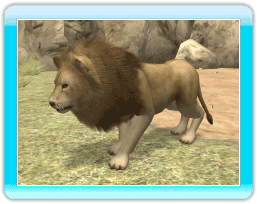
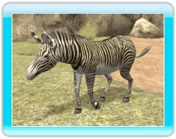
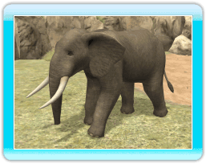

● Asiatic Lion
This forest-dwelling carnivore
usually travels in
small herds, but hunts alone.

● Grevy's
Zebra
This
uniquely-patterned herbivore can be found
in
the savannah or semidesert regions. It
spends most of its time eating when
awake.

● Hippopotamus
This large herbivore is found in the low
latitudes of Africa, and spends most of its time
in water.
It is able to stay under the water for about
5 minutes.

● Giant Panda
This
popular herbivore resides in bamboo
groves, where
it spends most of the day
munching on bamboo leaves.

● African
Elephant
This large herbivore can be found in the
savannah or in forests. It often bathes in water
due to how quickly the sweltering heat can dry
its skin.

● 3-Banded Armadillo
This tiny omnivore dwells in
forests and
savannah regions. It is very small at
only 8
inches long, and rolls into a ball to
protect
itself from
predators.

● American Black Bear
This omnivore is usually found in
forests, and is
very skilled at
climbing
trees.

● Malayan Tapir
This herbivore is usually found in
forests near
water, or in moist areas,
where it generally
travels alone or in pairs.